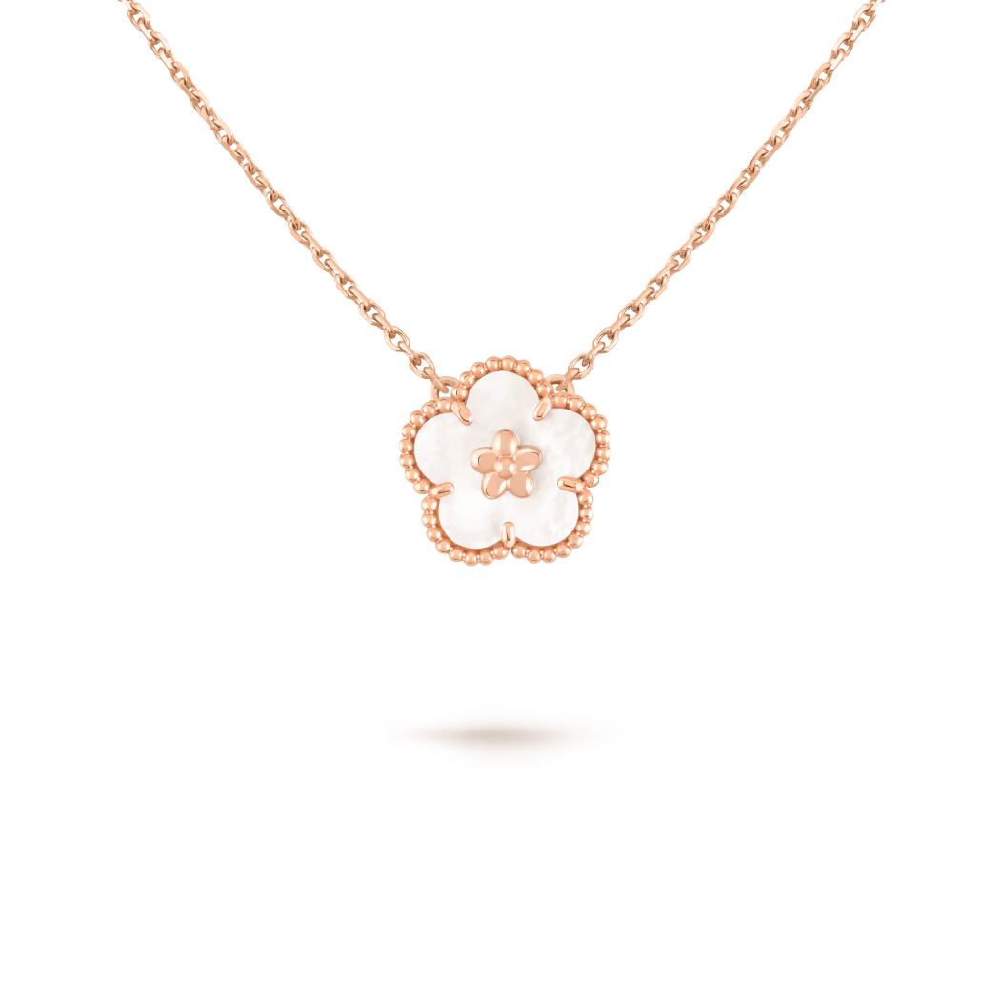
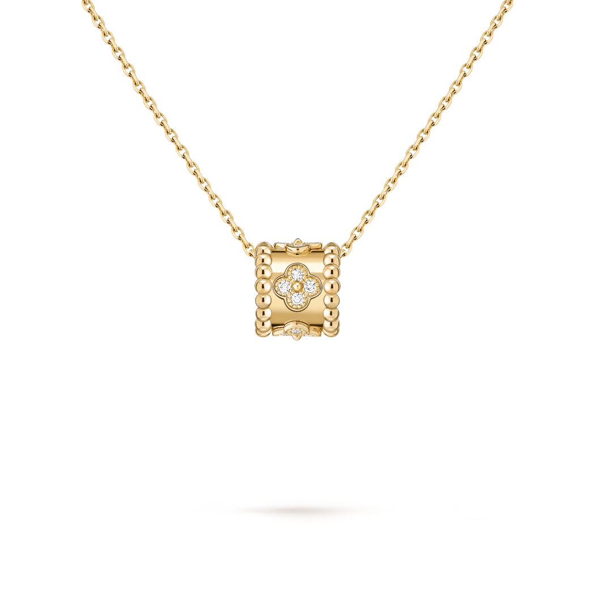
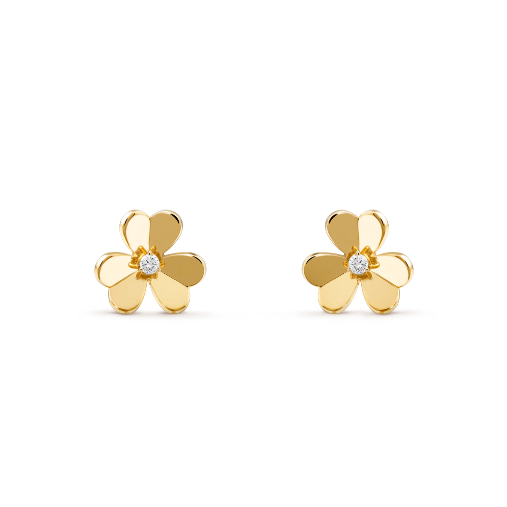
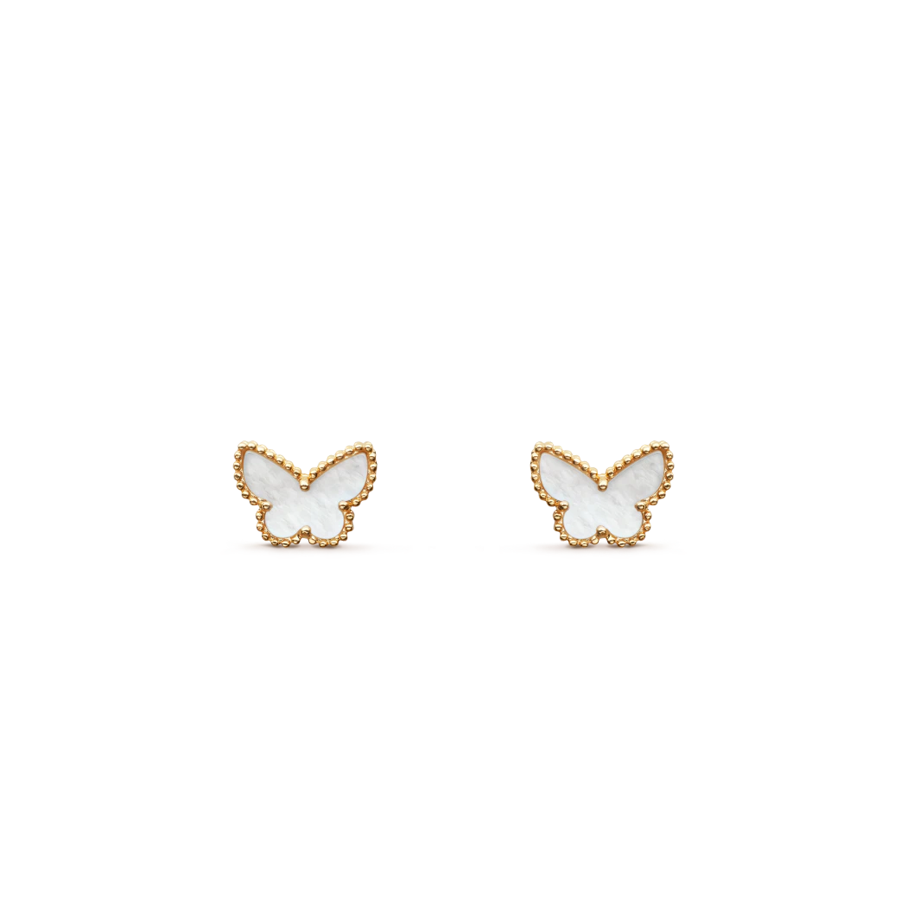
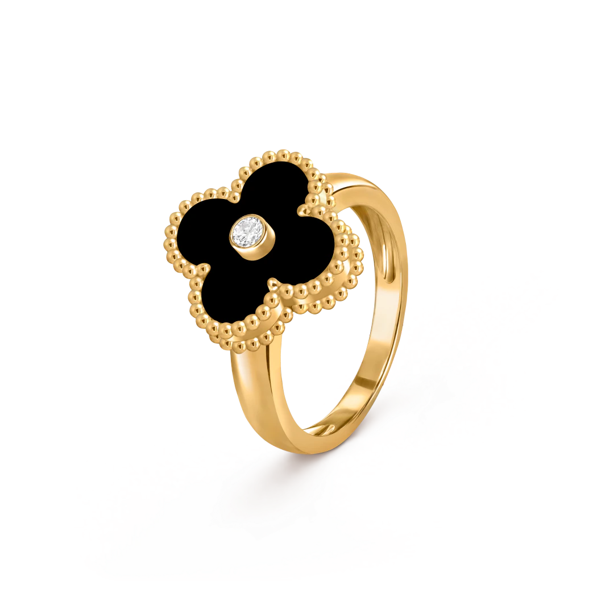
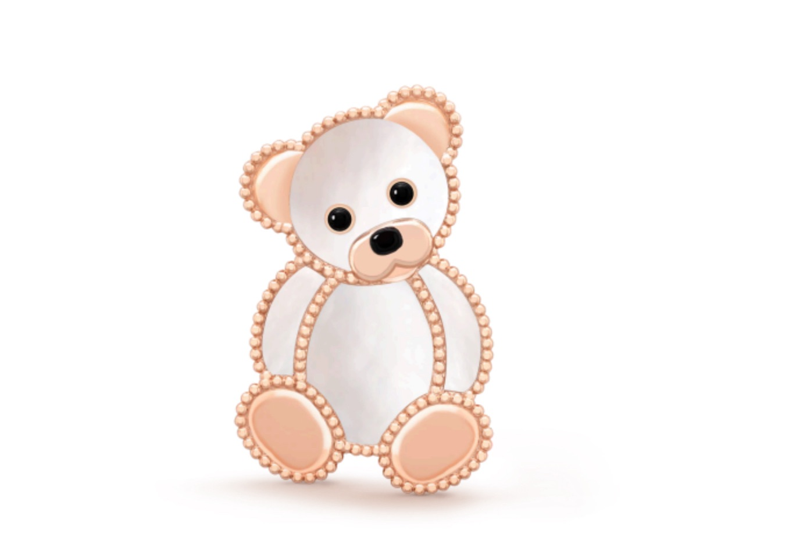

Lucky Spring pendant, plum blossom
⭐⭐⭐⭐⭐
18,200 Bath
With its ladybugs and floral motifs, the Lucky Spring® collection pays tribute to Spring, the season of
renewal dear to Van Cleef & Arpels. In 18K rose gold, carnelian and onyx, the creations enrich the
benevolent nature of the Maison's universe.

Perlée clovers pendant
⭐⭐⭐⭐⭐
180,00 Bath
The creations in the Perlée® clovers collection are adorned with precious clover motifs - Van Cleef &
Arpels' symbol of luck. They are graced by a golden bead at their center. Chain sold separately.

Frivole earrings, large model
⭐⭐⭐⭐⭐
215,000 Bath
Like so many flowers dancing in the breeze, the Frivole® creations by Van Cleef & Arpels stand out
with their graphic and airy aesthetic. Mirror-polished 18K gold or diamonds bestow a singular
radiance upon heart-shaped petals.

Sweet Butterflies earstuds
⭐⭐⭐⭐⭐
100,000 Bath
Butterflies have always provided Van Cleef & Arpels with an endless source of inspiration, evoking
the beauty of nature in movement. Adorned with precious materials, butterfly jewelry creations
embody lightness, elegance and femininity.

Vintage Alhambra ring
⭐⭐⭐⭐⭐
138,000 Bath
Faithful to the very first Alhambra® jewel created in 1968, the Vintage Alhambra creations by Van
Cleef & Arpels are distinguished by their unique, timeless elegance. Inspired by the clover leaf, these
icons of luck are adorned with a border of golden beads.

Lucky Animals Teddy Bear Clip
⭐⭐⭐⭐⭐
246,000 Bath
A joyful, benevolent nature takes center stage in the Lucky Animals® collection, which depicts a
family of adorable animals. From the sky to the earth, they perpetuate Van Cleef & Arpels' traditional
menagerie - illustrated by the playful creations of "la boutique" from the 1950s onwards. Today, new
clips come to life, combining 18K gold, mother-of-pearl and ornamental stones. The Maison's
signature beaded contour enhances their curves with elegance.